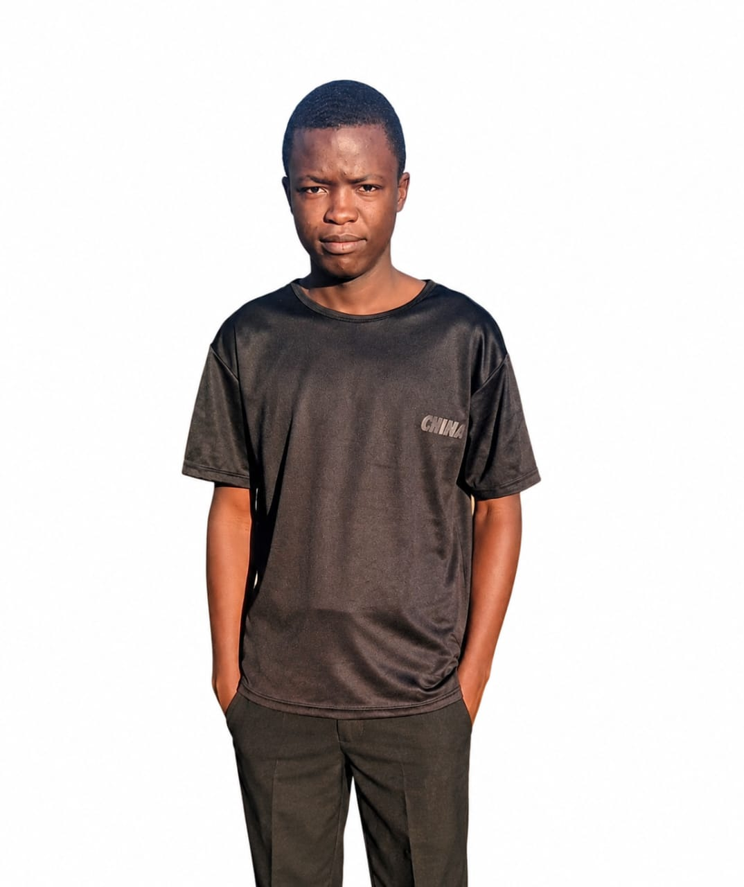

Hello, I'm
I enjoy learning web development and building responsive websites using HTML, CSS, and JavaScript.

I'm Vitalis Tembo, a Software Engineering student at Uncommon.org Hub. I'm passionate about building practical web applications and using technology to solve real-world problems. Some of the projects I've built include AgriConnect and a To-Do List application. I'm continuously learning new technologies and improving my skills as I work toward becoming a professional software developer.
Creating well-structured web pages.
Designing responsive and modern layouts.
Learning interactive web development.
Building applications and solving problems.
A platform that connects farmers with buyers to make agricultural trading easier and more efficient.
View ProjectA simple application that helps users organize and manage their daily tasks.
View ProjectI'd love to hear from you. Feel free to reach out!
Email: tembovitalis0@gmail.com
Phone: +263 789 651 083
Location: Zimbabwe, Victoria Falls